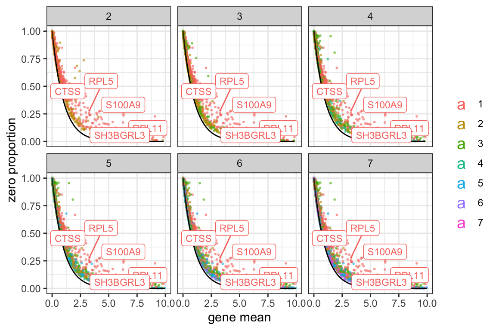
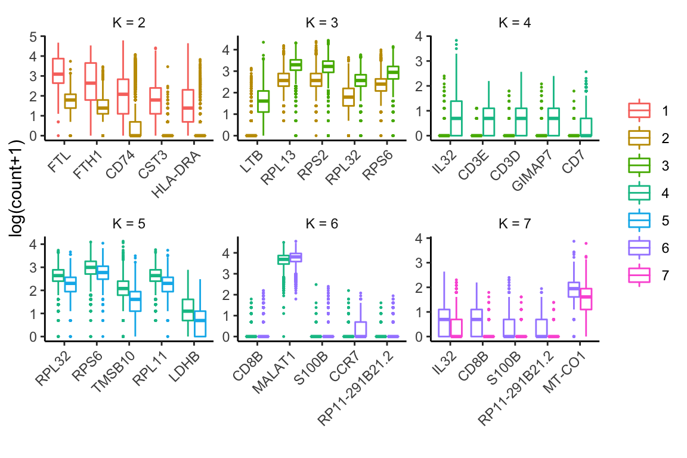

Last updated: 2020-01-31
Checks: 7 0
Knit directory: HIPPO/
This reproducible R Markdown analysis was created with workflowr (version 1.5.0). The Checks tab describes the reproducibility checks that were applied when the results were created. The Past versions tab lists the development history.
Great! Since the R Markdown file has been committed to the Git repository, you know the exact version of the code that produced these results.
Great job! The global environment was empty. Objects defined in the global environment can affect the analysis in your R Markdown file in unknown ways. For reproduciblity it’s best to always run the code in an empty environment.
The command set.seed(20200117) was run prior to running the code in the R Markdown file. Setting a seed ensures that any results that rely on randomness, e.g. subsampling or permutations, are reproducible.
Great job! Recording the operating system, R version, and package versions is critical for reproducibility.
Nice! There were no cached chunks for this analysis, so you can be confident that you successfully produced the results during this run.
Great job! Using relative paths to the files within your workflowr project makes it easier to run your code on other machines.
Great! You are using Git for version control. Tracking code development and connecting the code version to the results is critical for reproducibility. The version displayed above was the version of the Git repository at the time these results were generated.
Note that you need to be careful to ensure that all relevant files for the analysis have been committed to Git prior to generating the results (you can use wflow_publish or wflow_git_commit). workflowr only checks the R Markdown file, but you know if there are other scripts or data files that it depends on. Below is the status of the Git repository when the results were generated:
Ignored files:
Ignored: .Rhistory
Ignored: .Rproj.user/
Ignored: R/.Rhistory
Ignored: analysis/figure/
Untracked files:
Untracked: HIPPO_0.1.0.tar.gz
Untracked: make_sce_zhengmix4eq.R
Untracked: sce_full_Zhengmix4eq.rds
Note that any generated files, e.g. HTML, png, CSS, etc., are not included in this status report because it is ok for generated content to have uncommitted changes.
These are the previous versions of the R Markdown and HTML files. If you’ve configured a remote Git repository (see ?wflow_git_remote), click on the hyperlinks in the table below to view them.
| File | Version | Author | Date | Message |
|---|---|---|---|---|
| Rmd | 7f76bf4 | tk382 | 2020-01-31 | Matrix error in hippo and remove irrelevant comment in example2 |
| Rmd | e6ce1d8 | tk382 | 2020-01-30 | workflowr::wflow_publish(“analysis/example2.Rmd”) |
| html | 323564e | tk382 | 2020-01-22 | Build site. |
| Rmd | 3531e4b | tk382 | 2020-01-22 | wflow_publish(“analysis/example2.Rmd”, |
| html | 8809a3d | tk382 | 2020-01-22 | Build site. |
| Rmd | e5f797b | tk382 | 2020-01-22 | wflow_publish(“analysis/example2.Rmd”, republish = TRUE) |
| html | 75f668f | tk382 | 2020-01-17 | Build site. |
| Rmd | b78600d | tk382 | 2020-01-17 | wflow_publish(c(“analysis/example.Rmd”, “analysis/example2.Rmd”, |
| Rmd | b404eae | tk382 | 2020-01-17 | add workflow analysis files |
This data set is available in 10X website. The format is Matrix, so we need Matrix package for this particular example.
library(Matrix)
X = readMM("/Volumes/tae/Work/SC/data/10X_68K/filtered_matrix/hg19/matrix.mtx")
rowdata = read.table("/Volumes/tae/Work/SC/data/10X_68K/filtered_matrix/hg19/genes.tsv") # this shows both ENSG IDs and HGNC symbols
coldata = data.table::setDF(data.table::fread("/Volumes/tae/Work/SC/data/10X_68K/filtered_matrix/hg19/barocdes_annotation.tsv")) # this shows barcode information
rownames(X) = rowdata$V1
colnames(X) = coldata$barcodesHIPPO also works with a sparse matrix object (dgCMatrix from Matrix package) as well, but the visualization package UMAP and Rtsne does not work with it well as of now.
To expedite the process, I sampled 10,000 cells from 68,000 cells.
set.seed(20200117)
cells = sample(1:ncol(X), size = 10000)
X = X[, cells]
coldata = coldata[cells, ]
rm(cells)Then create the SingleCellExperiment object.
sce = SingleCellExperiment(assays = list(counts = X),
rowData = rowdata,
colData = coldata)This shows how noisy our initial data is.
hippo_diagnostic_plot(sce)This step performs the feature selection and hierarchical clustering.
sce = hippo(sce, K = 7, z_threshold = 1.5, outlier_proportion = 0.005)[1] "K = 2.."
[1] "K = 3.."
[1] "K = 4.."
[1] "K = 5.."
[1] "K = 6.."
[1] "K = 7.."ref = data.frame(hgnc = rowData(sce)$V2,
ensg = rowData(sce)$V1)
zero_proportion_plot(sce, switch_to_hgnc = TRUE, ref = ref)
sce = diffexp(sce, top.n = 5, switch_to_hgnc = TRUE, ref = ref)
head(sce@int_metadata$hippo$diffexp$result_table[[1]]) genes meandiff sd z hgnc
1 ENSG00000087086 24.418789 0.2026009 120.52656 FTL
2 ENSG00000167996 17.947127 0.1743106 102.96061 FTH1
3 ENSG00000019582 11.701227 0.1382068 84.66461 CD74
4 ENSG00000101439 8.677931 0.1095546 79.21099 CST3
5 ENSG00000204287 8.388013 0.1120801 74.83947 HLA-DRA
6 ENSG00000196126 7.500041 0.1053995 71.15823 HLA-DRB1head(sce@int_metadata$hippo$diffexp$result_table[[2]]) genes meandiff sd z hgnc
1 ENSG00000227507 4.248654 0.03162331 134.35197 LTB
2 ENSG00000167526 12.674643 0.10782083 117.55282 RPL13
3 ENSG00000140988 10.803393 0.10731299 100.67181 RPS2
4 ENSG00000144713 6.569609 0.07240089 90.73934 RPL32
5 ENSG00000137154 8.130273 0.09333585 87.10773 RPS6
6 ENSG00000142676 6.284986 0.07328654 85.75907 RPL11head(sce@int_metadata$hippo$diffexp$result_table[[3]]) genes meandiff sd z hgnc
1 ENSG00000008517 2.1099913 0.02557734 82.49455 IL32
2 ENSG00000198851 1.1756362 0.01800683 65.28834 CD3E
3 ENSG00000167286 1.4416552 0.02213200 65.13894 CD3D
4 ENSG00000179144 1.3500114 0.02253260 59.91369 GIMAP7
5 ENSG00000173762 0.7975143 0.01585160 50.31127 CD7
6 ENSG00000166710 7.1010735 0.16801923 42.26346 B2M
sessionInfo()R version 3.6.1 (2019-07-05)
Platform: x86_64-apple-darwin15.6.0 (64-bit)
Running under: macOS Sierra 10.12.6
Matrix products: default
BLAS: /Library/Frameworks/R.framework/Versions/3.6/Resources/lib/libRblas.0.dylib
LAPACK: /Library/Frameworks/R.framework/Versions/3.6/Resources/lib/libRlapack.dylib
locale:
[1] en_US.UTF-8/en_US.UTF-8/en_US.UTF-8/C/en_US.UTF-8/en_US.UTF-8
attached base packages:
[1] parallel stats4 stats graphics grDevices utils datasets
[8] methods base
other attached packages:
[1] Matrix_1.2-17 magrittr_1.5
[3] SingleCellExperiment_1.8.0 SummarizedExperiment_1.16.1
[5] DelayedArray_0.12.1 BiocParallel_1.20.1
[7] matrixStats_0.55.0 Biobase_2.46.0
[9] GenomicRanges_1.38.0 GenomeInfoDb_1.22.0
[11] IRanges_2.20.1 S4Vectors_0.24.1
[13] BiocGenerics_0.32.0 HIPPO_0.1.0
loaded via a namespace (and not attached):
[1] tidyselect_0.2.5 xfun_0.11 purrr_0.3.3
[4] reshape2_1.4.3 lattice_0.20-38 colorspace_1.4-1
[7] htmltools_0.4.0 yaml_2.2.0 rlang_0.4.3
[10] later_1.0.0 pillar_1.4.3 glue_1.3.1
[13] GenomeInfoDbData_1.2.2 lifecycle_0.1.0 plyr_1.8.5
[16] zlibbioc_1.32.0 stringr_1.4.0 munsell_0.5.0
[19] gtable_0.3.0 workflowr_1.5.0 evaluate_0.14
[22] labeling_0.3 knitr_1.26 httpuv_1.5.2
[25] irlba_2.3.3 Rcpp_1.0.3 promises_1.1.0
[28] scales_1.1.0 backports_1.1.5 XVector_0.26.0
[31] farver_2.0.3 fs_1.3.1 gridExtra_2.3
[34] ggplot2_3.2.1 digest_0.6.23 stringi_1.4.5
[37] ggrepel_0.8.1 dplyr_0.8.3 grid_3.6.1
[40] rprojroot_1.3-2 tools_3.6.1 bitops_1.0-6
[43] lazyeval_0.2.2 RCurl_1.95-4.12 tibble_2.1.3
[46] crayon_1.3.4 whisker_0.4 pkgconfig_2.0.3
[49] data.table_1.12.6 assertthat_0.2.1 rmarkdown_2.0
[52] R6_2.4.1 git2r_0.26.1 compiler_3.6.1